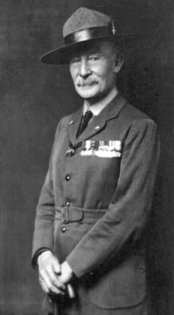

MOVIMIENTO SCOUT
Web de Paula Conde
INICIO
QUE ES
FUNDADOR
LEY Y PROMESA
ETAPAS
ACTIVIDADES
ENLACES
|  | Robert Stephenson Smyth Baden-Powell, I barón Baden-Powell de Gilwell (Paddington, Londres, Reino Unido, 22 de febrero de 1857 - Nyeri, Kenia, 8 de enero de 1941) fue un pintor, músico, militar, escultor y escritor británico. Fundador del Movimiento Scout Mundial, participó en distintas campañas militares en África, en las cuales destacó y obtuvo gran popularidad entre la población británica, especialmente por su heroica dirección en la defensa de Mafeking. Tras regresar a su isla natal, las publicaciones de sus libros se multiplicaron y se convirtió, así, en un destacado autor en materia de educación y formación juvenil. Sus ideas, plasmadas en Escultismo para muchachos y otras obras, inspiraron a grupos de jóvenes británicos a formar patrullas, con lo que se inició de manera informal el escultismo. Tras su renuncia al ejército británico por consejo del rey Eduardo VII, se dedicó plenamente a la formación del movimiento scout. Participó en actividades por todo el mundo, propagando y asentando las bases del escultismo moderno. Escribió una gran cantidad de libros adecuados a las necesidades del movimiento y a los diferentes niveles de participación de los scouts, permitiendo que estos, en todo el mundo, tuviesen la oportunidad de aprender mediante textos especializados para su edad. Tras obtener diversos premios y reconocimientos, se retiró con su esposa a Kenia, donde murió. Fue sepultado en Nyeri, Kenia. El mensaje de Baden-Powell, dirigido a todos los scouts del mundo: «Intentad dejar este mundo mejor de como os lo encontrasteis» resume uno de los fines a lograr en los jóvenes a través del escultismo. |
Esta web es un trabajo de clase de TIC de Paula Conde Chaves
Blog de la Asignatura TIC: Pulsa aquí
Colegio Moliere (Huelva)